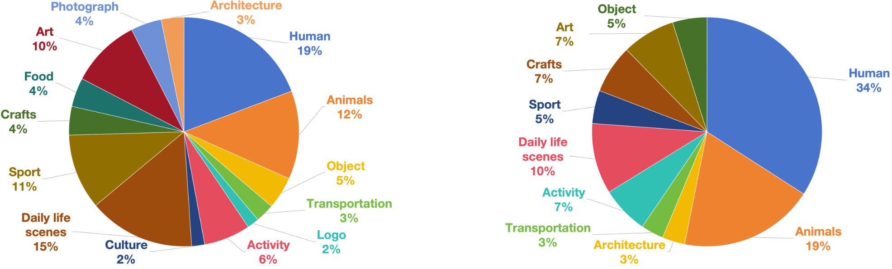

EvalAlign: Supervised Fine-Tuning Multimodal LLMs with Human-Aligned Data for Evaluating Text-to-Image Models
[Arxiv] [Code] [Model] [Dataset] [Page] [Leaderboard] [BibTeX]
[Arxiv] [Code] [Model] [Dataset] [Page] [Leaderboard] [BibTeX]
✅ 2024.06.20 We released the model weights of EvalAlign v1.0 13B on huggingface.
✅ 2024.06.21 We released the training and inference code of EvalAlign on github.
✅ 2024.06.27 We released the paper on arxiv.
✅ 2024.10.10 We released a new version of the paper on arxiv.
✅ 2024.10.16 We released the annotated dataset and the 34B finetuned model.
The recent advancements in text-to-image generative models have been remarkable. Yet, the field suffers from a lack of evaluation metrics that accurately reflect the performance of these models, particularly lacking fine-grained metrics that can guide the optimization of the models. In this paper, we propose EvalAlign, a metric characterized by its accuracy, stability, and fine granularity. Our approach leverages the capabilities of Multimodal Large Language Models (MLLMs) pre-trained on extensive data. We develop evaluation protocols that focus on two key dimensions: image faithfulness and text-image alignment. Each protocol comprises a set of detailed, fine-grained instructions linked to specific scoring options, enabling precise manual scoring of the generated images. We supervised fine-tune (SFT) the MLLM to align with human evaluative judgments, resulting in a robust evaluation model. Our evaluation across 24 text-to-image generation models demonstrate that EvalAlign not only provides superior metric stability but also aligns more closely with human preferences than existing metrics, confirming its effectiveness and utility in model assessment.
As illustrated in the above figure. We collect, filter and clean prompts from various sources to ensure the quantity, quality and diversity of the annotated EvalAlign dataset. We use 8 state-of-the-art text-to-image models to the generate images for annotation. These synthesized images are then delegated to human annotators for thorough multi-turn annotation. Finally, the annotated data are used to finetune a MLLM to align it with fine-grained human preference, thereby adapting the model to perform text-to-image evaluation on image faithfulness and text-image alignment. Besides, we also annotate 2.4k images generated by 24 popular text-to-image models~(including the 8 models mentioned above) to verify the generalization ability of EvalAlign. For more details on our comprehensive annotation procedure, please refer to our paper. We have implemented robust measures to ensure that human annotations are both high-quality and cost-efficient. Following the above pipeline and the released code, researchers can easily extend their own version of EvalAlign dataset.
We exhibit the statistics of our EvalAlign dataset in the above figure. As can be concluded, EvalAlign offers a human-aligned, fine-grained and automatic text-to-image evaluation benchmark, concentrating on assessing the image faithfulness and text-image alignment of synthesized images. To summarize, we generate 24k images from 3k prompts based on 8 text-to-image models, which includes DeepFloyd IF, SD15, LCM, SD21, SDXL, Wuerstchen, Pixart, and SDXL-Turbo. After data filtering, 4.5k images are selected as annotation data for task of text-image alignment. Subsequently, these images are carefully annotated to generate 13.5k text-image pairs, where 11.4k are used to the training dataset and 2.1k to the validation dataset. For the image faithfulness task, we select 12k images for annotation, yielding 36k text-image pairs, with 30k are used to the training dataset and 6.2k to the validation dataset. Additionally, we employed 24 text-to-image models to generate 2.4k images from 100 prompts. After annotation, these images are used as testing dataset.
The below two figures show the distribution of objects in different categories within prompts used for evaluating image-faithfulness (left) and text-image alignment (right), demonstrating the diversity and balance of our prompts.

We provide some detailed evaluation cases by human and EvalAlign in the above figure. As can be summarized, EvalAlign provides reasonable socres on each question just like human, which indicates that EvalAlign is sufficiently capable of conducting the evaluations on image faithfulness and text-image alignment at a close-to-human level.
For more results about the generalization experiments, ablation study and analysis of EvalAlign, please refer to our paper. For more information on the EvalAlign evaluation results, please refer to the leaderboard page or our paper, we recommend the former.
@article{tan2024evalalign,
title={EvalAlign: Evaluating Text-to-Image Models through Precision Alignment of Multimodal Large Models with Supervised Fine-Tuning to Human Annotations},
author={Tan, Zhiyu and Yang, Xiaomeng and Qin, Luozheng and Yang, Mengping and Zhang, Cheng and Li, Hao},
journal={arXiv preprint arXiv:2406.16562},
year={2024}
}